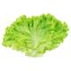
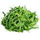

Tomatoes stuffed with seasoned ricotta cream
Indulge in the flavors of this quick and easy tomatoes stuffed with seasoned ricotta cream
recipe! Perfect for a
weeknight dinner or a special occasion, this dish is sure to impress.
Tomatoes stuffed with seasoned ricotta cream is a classic
dish that highlights
the natural sweetness of the tomatoes, complemented by the rich flavors of ricotta and herbs. This recipe is
not only delicious but also incredibly simple to prepare, making it a go-to option for busy home cooks.
The key to this dish is to use high-quality ingredients, including fresh tomatoes and good ricotta. The tomatoes
are stuffed with a creamy ricotta mixture and baked until they are perfectly cooked, then garnished with fresh
herbs for a burst of flavor.
Serve this dish as a light main course or a hearty appetizer. It's a versatile recipe
that can be customized with your favorite herbs and spices.
Follow these simple steps and enjoy a restaurant-quality meal at home!
Ingredients
-
 4 ripe tomatoes, cut in half
4 ripe tomatoes, cut in half
-
 1 jar of tirolez ricotta cream
1 jar of tirolez ricotta cream
-
 5 tablespoons of olive oil
5 tablespoons of olive oil
-  Lettuce
-  Arugula
-
 1 cup (tea) of chopped chives
1 cup (tea) of chopped chives
-
 Salt to taste
Salt to taste
- Pepper to taste